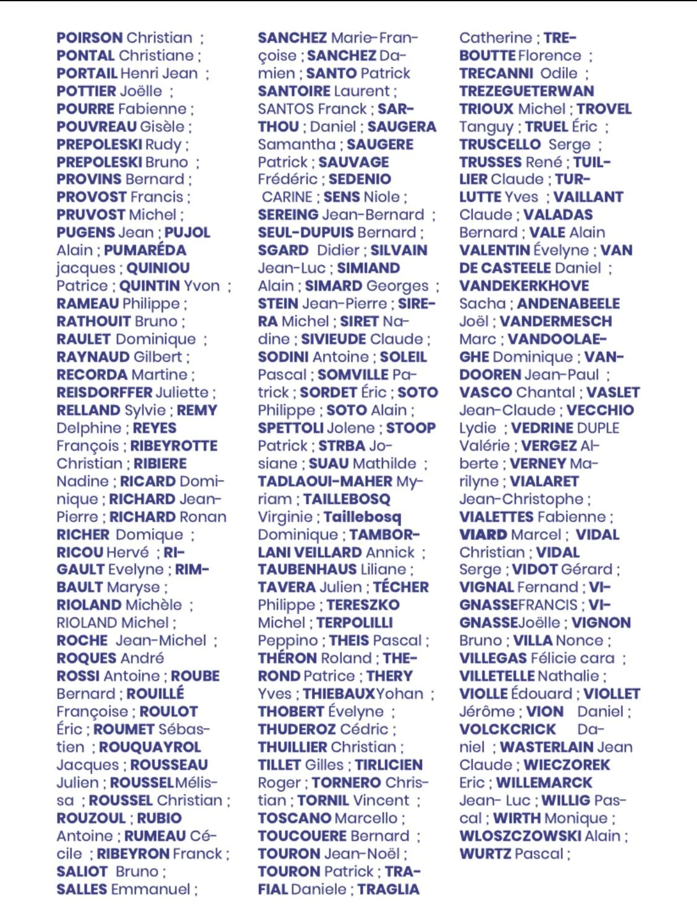
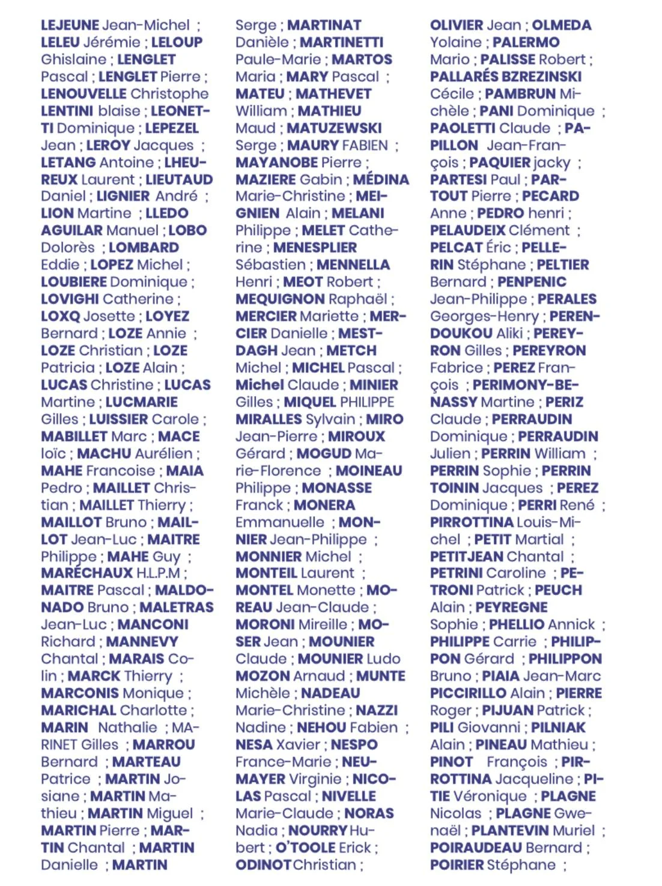
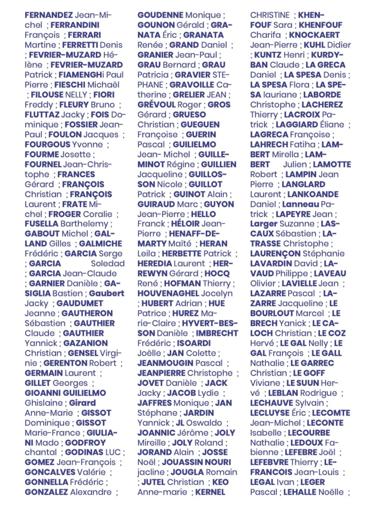
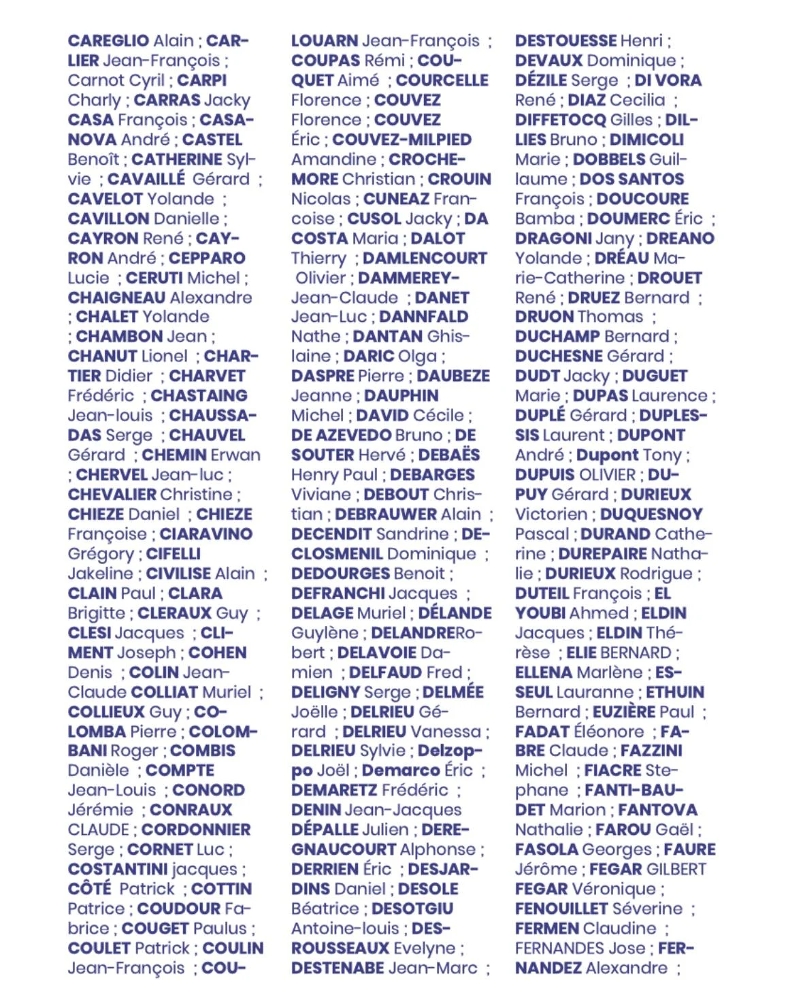
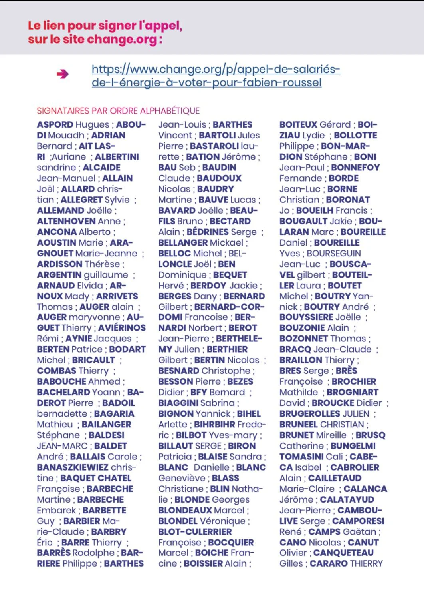

Document de campagne relayé
Des salariés de l’énergie appellent à voter Fabien Roussel. Le document, deuxième partie
Date indiquée par Facebook · 14 mars 2022
Repères éditoriaux
Le partage conserve la deuxième partie du document. La première partie et la publication d’ensemble figurent dans les archives.
Texte conservé avec la publication
Plus de 800 salarié-e-s de l'énergie appellent à voter Fabien Roussel (2/2)





Sources
Archive rouge · export Facebook · AR-0002-FB-01929
À lire aussi · L’appel de salariés de l’énergie à voter Fabien Roussel